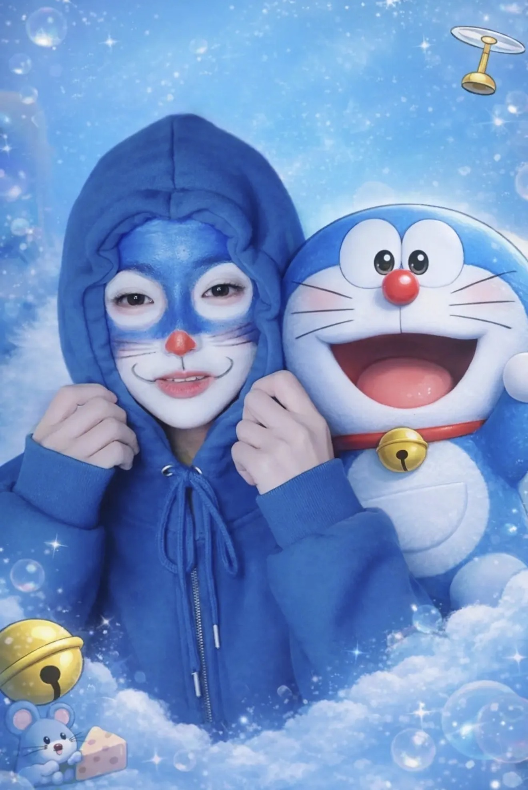

💌 징니에게 보내는 메시지
💬 "1주년 축하해요!
행복을 줘서 고마워요."
नमस्ते जिंगनी जी,
देखते ही देखते आपको TikTok लाइव शुरू किए हुए एक साल हो गया है। TikTok पर एक साल तक लगातार प्रसारण करना आसान नहीं होता, लेकिन आपकी लगन और धैर्य सच में काबिल-ए-तारीफ़ है।
मैं कोई बहुत ज़्यादा डोनेशन देने वाला दर्शक नहीं हूँ, और ना ही हमेशा सिर्फ अच्छी बातें करने वाला दर्शक हूँ। सच कहूँ तो, मैं ज़्यादा सपोर्ट भी नहीं कर पाता (क्योंकि मैं तो गरीब हूँ 🥲🥲) और हमेशा आपको चिढ़ाने वाला दर्शक ही रहा हूँ। फिर भी आप मुझे बाकी सबकी तरह ही बराबरी से ट्रीट करती हैं और कभी भी बुरी बात नहीं कहतीं — इसके लिए मैं दिल से शुक्रगुज़ार हूँ। अगर कोई और होता, तो शायद मुझे बहुत पहले ही ब्लॉक कर दिया गया होता 🤣🤣।
पिछले एक साल से आपको देखते हुए मैंने आपसे बहुत कुछ सीखना चाहा है। चाहे कमाई अच्छी ना हो या दर्शक कम हों, आपने कभी हार नहीं मानी। आसपास चाहे कितनी भी असुरक्षा या परेशानियाँ हों, आप बिना डगमगाए अपने रास्ते पर आगे बढ़ती रहीं — यह सच में बहुत प्रेरणादायक और शानदार है।
मैं थोड़ा स्वार्थी हूँ, हर दिन आकर देर तक देखने वाला दर्शक भी नहीं हूँ। कभी बोर हुआ या मन किया तो आ गया। फिर भी आप हर बार मेरा निकनेम लेकर खुशी से स्वागत करती हैं — इसके लिए बहुत धन्यवाद। और हर बार आकर आपको बहुत चिढ़ाने के लिए माफ़ी भी चाहता हूँ 😅😅।
लेकिन मैंने आपको कभी बुरी नीयत से नहीं चिढ़ाया। आप जानती हैं ना — जितना पसंद करता हूँ, उतना ही ज़्यादा चिढ़ाता हूँ?
मेरा निकनेम “करे” (कड़ी/करी) है, तो मैंने करी के देश भारत की भाषा में ये ख़त लिखा है। सोचा अगर आप रो रही हों, तो थोड़ा सा हँस सकें ☺️
TikTok लाइव के एक साल पूरे होने पर आपको दिल से बहुत-बहुत बधाई। आपने सच में बहुत मेहनत की है। मुझे लगता है आप जैसी इंसान जो भी करे, उसमें ज़रूर सफल होगी। इसलिए चिंता मत कीजिए, खुद पर विश्वास रखिए। सिर्फ TikTok ही नहीं, बल्कि जो भी करें आत्मविश्वास से करें। आप पूरी तरह से कर सकती हैं!
मैं हमेशा आपका समर्थन करूँगा।
TikTok लाइव के एक साल पूरे होने की दिल से हार्दिक बधाई 🥳🎉
From.カレーや💛
To. 징니야 🤍
징니야, 안녕하세요.
어느새 틱톡 라이브를 시작한 지 1년이 되었네요.
틱톡에서 1년 동안 꾸준히 방송한다는 건 정말 쉽지 않은 일이에요.
하지만 징니의 끈기와 인내는 정말 대단하고 존경스러워요.
나는 큰 후원을 하는 시청자도 아니고,
항상 좋은 말만 하는 시청자도 아니에요.
솔직히 말하면… 응원도 많이 못 해요.
왜냐면… 나 가난하거든 🥲🥲
그리고 항상 징니를 괴롭히는 시청자였지 ㅋㅋ
그런데도 징니는 나를 다른 사람들과 똑같이 대해주고,
한 번도 나쁜 말을 하지 않았어요.
정말 고마워요.
다른 사람이었으면 진작에 나를 차단했을지도 몰라요 🤣🤣
지난 1년 동안 징니를 보면서
나는 정말 많은 걸 배우고 싶었어요.
수익이 적어도, 시청자가 적어도
징니는 한 번도 포기하지 않았어요.
불안하거나 힘든 상황이 와도
흔들리지 않고 계속 앞으로 나아가는 모습…
정말 멋지고, 큰 힘이 되었어요.
나는 좀 이기적이라서
매일 오래 보는 시청자도 아니고,
심심하면 오고, 보고 싶으면 오는 그런 사람이에요.
그런데도 징니는 올 때마다
내 닉네임을 불러주면서 반갑게 맞아줘요.
정말 고마워요.
그리고 매번 와서 너무 괴롭혀서 미안해요 😅😅
하지만 징니도 알죠?
좋아하면… 더 많이 괴롭히는 거 ㅎㅎ
내 닉네임이 ‘카레(カレー)’니까
카레의 나라, 인도의 언어로 편지를 써봤어요.
혹시 울고 있다면… 조금이라도 웃게 해주고 싶어서요 ☺️
틱톡 라이브 1주년 진심으로 축하해요.
정말 수고 많았어요.
나는 징니 같은 사람은
무엇을 해도 잘될 거라고 믿어요.
그러니까 걱정하지 말고,
자신감을 가지고 하고 싶은 걸 해요.
징니라면 뭐든지 할 수 있어요.
나는 언제나 징니를 응원할게요.
틱톡 라이브 1주년 진심으로 축하해요 🥳🎉"
From.カレーや💛
이거 사랑이랑
항상 방송켜줘서 고마워 누나 언제나 건강한 모습으로 봐 사랑해
항상 방송켜줘서 고마워 누나 언제나 건강한 모습으로 봐 사랑해

🌙 "징니야, 이 페이지는 너를 사랑하는 사람들의 마음이 모인 곳이야.
하나하나가 너를 위해 준비된 진심이야." — 니로콰
Made with ❤️ by Nirokwa